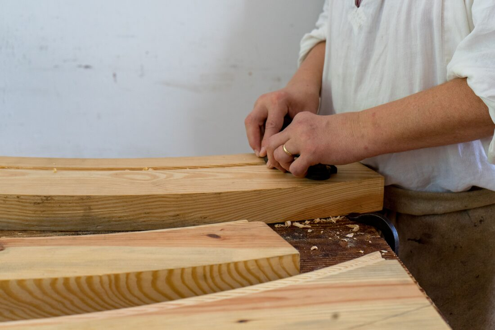

Manos, madera y marEskuak, egurra eta itsasoaHands, wood and seaDes mains, du bois et la mer
La historia de Alex: de dónde parte, cómo mira cada material, y qué le impulsa a darle una segunda vida. Alexen istorioa: nondik abiatzen den, material bakoitzari nola begiratzen dion, eta zerk bultzatzen duen bigarren bizitza ematera. Alex's story: where he starts from, how he looks at each material, and what drives him to give it a second life. L’histoire d’Alex : d’où il part, comment il regarde chaque matériau, et ce qui le pousse à lui donner une seconde vie.

El que ve una pieza donde otros ven un desechoBeste batzuek zaborra ikusten duten tokian pieza bat ikusten duenaThe one who sees a piece where others see debrisCelui qui voit une pièce là où d’autres voient des débris
Alex es artesano, y lo es de una forma poco convencional: no parte de un plano ni de un catálogo de materiales. Parte de un hallazgo. Una tabla vieja apoyada contra una pared, un trozo de barco que ya no navega, la rama de un árbol que cayó en la última galerna — y en ese hallazgo empieza a ver, casi de inmediato, lo que esa madera, ese metal o esa piedra podrían llegar a ser.
Alex artisaua da, eta era ez oso arruntean da: ez du plano batetik edo material-katalogo batetik abiatzen. Aurkikuntza batetik abiatzen da. Horma baten kontra jarrita dagoen ohol zahar batetik, jada ibiltzen ez den itsasontzi-zati batetik, azken galerna batean erori zen zuhaitz-adar batetik — eta aurkikuntza horretan hasten da ikusten, ia berehala, egur, metal edo harri horrek zer izan ahal duen.
Alex is a craftsman, and an unconventional one at that: he doesn't start from a blueprint or a catalogue of materials. He starts from a find. An old plank leaning against a wall, a piece of a boat that no longer sails, the branch of a tree that came down in the last storm — and in that find he starts to see, almost immediately, what that wood, metal or stone could become.
Alex est artisan, et d’une manière peu conventionnelle : il ne part ni d’un plan ni d’un catalogue de matériaux. Il part d’une trouvaille. Une vieille planche appuyée contre un mur, un morceau de bateau qui ne navigue plus, la branche d’un arbre tombé lors de la dernière tempête — et dans cette trouvaille, il commence à voir, presque immédiatement, ce que ce bois, ce métal ou cette pierre pourraient devenir.
No hace dos piezas iguales. No porque se lo proponga como estrategia, sino porque nunca encuentra dos materiales iguales. Cada objeto que sale de su taller lleva dentro la historia de dónde vino, y eso —más que la técnica— es lo que a Alex le importa contar.
Ez du bi pieza berdin egiten. Ez estrategia gisa proposatzen duelako, baizik eta inoiz ez duelako bi material berdin aurkitzen. Bere tailerretik ateratzen den objektu bakoitzak barnean darama nondik datorren istorioa, eta hori —teknika baino gehiago— da Alexi kontatzea axola zaiona.
He never makes two pieces the same. Not as a deliberate strategy, but because he never finds two identical materials. Every object that leaves his workshop carries within it the story of where it came from, and that — more than technique — is what Alex cares about telling.
Il ne fait jamais deux pièces identiques. Non par stratégie délibérée, mais parce qu’il ne trouve jamais deux matériaux identiques. Chaque objet qui sort de son atelier porte en lui l’histoire de son origine, et c’est cela — plus que la technique — qu’Alex tient à raconter.
De hallazgo a piezaAurkikuntzatik piezaraFrom find to pieceDe la trouvaille à la pièce
1. Encontrar1. Aurkitu1. Find1. Trouver
En la orilla, el monte, un derribo o una lonja: el material siempre llega primero. Hondartzan, mendian, eraisketa batean edo lonjan: materiala beti lehenago iristen da. On the shore, the mountain, a demolition or the fish market: the material always arrives first. Sur le rivage, en montagne, lors d’une démolition ou à la criée : le matériau arrive toujours en premier.
2. Observar2. Behatu2. Observe2. Observer
Vetas, curvas, marcas del tiempo — nada se fuerza, todo se escucha primero. Barrunbeak, kurbak, denboraren arrastoak — ezer ez da behartzen, dena entzuten da lehenik. Grain, curves, marks of time — nothing is forced, everything is listened to first. Le grain, les courbes, les marques du temps — rien n’est forcé, tout s’écoute d’abord.
3. Imaginar3. Irudikatu3. Imagine3. Imaginer
Aquí aparece lo inesperado: rara vez la pieza final es la que uno esperaría. Hemen agertzen da ustekabekoa: gutxitan da azken pieza espero litekeena. This is where the unexpected appears: the final piece is rarely the obvious one. C’est ici qu’apparaît l’inattendu : la pièce finale est rarement la plus évidente.
4. Transformar4. Eraldatu4. Transform4. Transformer
Todo a mano, sin prisa, hasta que la pieza está lista — no antes. Dena eskuz, presarik gabe, pieza prest dagoen arte — ez lehenago. All by hand, without rushing, until the piece is ready — not before. Tout à la main, sans précipitation, jusqu’à ce que la pièce soit prête — pas avant.
«No busco la madera perfecta. Busco la que ya tiene algo que contar.» «Ez dut egur perfektua bilatzen. Kontatzeko zerbait duena bilatzen dut.» «I don't look for perfect wood. I look for wood that already has something to tell.» « Je ne cherche pas le bois parfait. Je cherche celui qui a déjà quelque chose à raconter. »
— frase de ejemplo, tono orientativo a validar con Alex — adibidezko esaldia, Alexekin balioztatu beharreko tonua — example line, tone to be validated with Alex — phrase d’exemple, ton à valider avec Alex
Tres paisajes, un mismo gestoHiru paisaia, keinu beraThree landscapes, one gestureTrois paysages, un même geste
El marItsasoaThe seaLa mer
Lekeitio está en el origen de todo. El puerto, las txalupas, la lonja — es el paisaje que Alex mira cada día, y el que más piezas le ha regalado. Lekeitio dago guztiaren jatorrian. Portua, txalupak, lonja — egunero begiratzen duen paisaia da, eta gehien pieza eman dion. Lekeitio is at the root of everything. The harbour, the fishing boats, the market — it's the landscape Alex looks at every day, and the one that has given him the most pieces. Lekeitio est à l’origine de tout. Le port, les bateaux de pêche, la criée — c’est le paysage qu’Alex regarde chaque jour, et celui qui lui a offert le plus de pièces.
Descubre más →Ezagutu gehiago →Discover more →Découvrir plus →Lo ruralLanda-eremuaThe countrysideLa campagne
El monte, los caseríos y los árboles que caen en cada temporal le recuerdan que la naturaleza también "desecha" material — y que ahí hay tanta belleza como en el mar. Mendiak, baserriek eta ekaitz bakoitzean erortzen diren zuhaitzek gogorarazten diote naturak ere materiala "baztertzen" duela — eta bertan itsasoan bezainbeste edertasun dagoela. The mountains, the farmhouses and the trees that fall in every storm remind him that nature also "discards" material — and that there's just as much beauty in it as in the sea. La montagne, les fermes et les arbres qui tombent à chaque tempête lui rappellent que la nature « jette », elle aussi, des matériaux — et qu’il y a là autant de beauté que dans la mer.
Descubre más →Ezagutu gehiago →Discover more →Découvrir plus →Lo urbanoHiriaThe cityLa ville
Comercios que cierran, reformas, herrerías que se jubilan: Alex también encuentra memoria en lo urbano, y le da una segunda vida. Itxi diren dendak, birgaitzeak, erretiratzen diren burdindegiak: Alexek hirian ere oroimena aurkitzen du, eta bigarren bizitza ematen dio. Closing shops, renovations, retiring forges: Alex finds memory in the city too, and gives it a second life. Des commerces qui ferment, des rénovations, des forges qui s’éteignent : Alex trouve aussi de la mémoire dans la ville, et lui donne une seconde vie.
Descubre más →Ezagutu gehiago →Discover more →Découvrir plus →